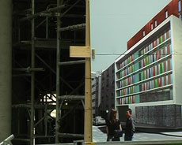

|
PAR L'EAU ET PAR LE FEU (Through Water and Fire)
Claire Angelini | F/D 2009 | 11 Min.
Material: DV
Format: MiniDV
Original language: French
Camera: Claire Angelini
Editing: Claire Angelini
Sound: Claire Angelini
Texts: Libération 27.08.05, Libération 20.04.2009, Pierre Guyotat, Claire Angelini
Speaker: Marlon Samuel Legitimus
Production: Claire Angelini
Print/Sales: Claire Angelini
August 25, 2005. A house burns in the center of Paris. 47 people fall victim to the fire, 17 people die, 12 of them are children. They were all of African descent. Today there is a construction site where the burnt down building used to stand. It covers the memory of a place that is no longer recognizable. PAR L'EAU ET PAR LE FEU strives to commemorate against the construction fence's resisting opposition and the indifferent neutrality of the site. Angelini captures with her camera the place's seeming banality. In almost photographic shots she registers every minimal movement happening. Through her cinematic eye the vacant site turns into a memorial for a dark day in France's recent history and a warning for a Europe that finds it difficult to construct immigration as integration.
Claire Angelini, born in 1969 in Nizza, France and currently lives and works in Munich and Paris. Study of Fine Arts at the ENSBA in Paris and Art History in the Sorbonne. Her videos were exhibited in numerous installations. Besides her audiovisuell works she also publishes artist books.
Films (selection): 2010 Frontière du temps, Marche/Aragon, Par l’eau et par le feu | 2009 Le retour au pays de l’enfance (UNDERDOX 04) | 2007 Loci soli/Soliloques, La mémoire n’est pas un jeu d’enfant, SHE/SEE (UNDERDOX 02) | 2005 Es geht eine dunkle Wolk herein | 2004 Ici s’atteint la limite de l’effort pédagogique
back
|